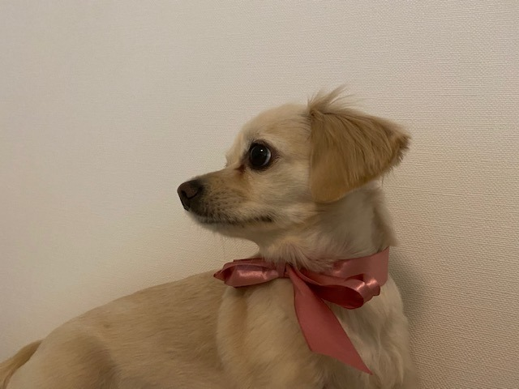

2020/0408Wedここ最近は
こんにチワワ
ここ最近はずっとゲームしてます
switchでいろんなゲームしてます
たのしい
バイオハザードうまい人の実況見たり。
バイオハザードうまい人ってかっこいい。憧れます。
私もクリア目指して頑張るぞー
あとは本を読んだり
映画を見たり
メイク勉強したり
インテリアをネットで見たり

ぽかん。
あ、あとは
オードリーヘップバーンについての本を
読み漁っています。
素敵だー
ちなみに
堀家にはチワワのニコルくんと

チワックスのプティくん

がいて毎日賑やかです☺︎
甘えん坊さんでおてんばでかわいい☺︎
みなさんは動物好きですか？
私はいつかお猿さんも飼ってみたいです
写真が無いので季節外れですがサンタさん。

みなさんのリクエストにお応えしながら
いろんなヘアメイクやっていきますね〜！
今日はどんなのにしようかなぁ
動画は@horimiona_2nd
にて
また更新します☺︎

じゃね
2020/04/08 09:12
コメント(320)
個性的で面白くて応援してます。
女優業の方も期待してます(^^
スプラトゥーン2とかもやったことありますかね。
女優業の方も期待してます(^^
スプラトゥーン2とかもやったことありますかね。
堀未央奈さん大好きです
小3になりました。これからも頑張ってください‼️
小3になりました。これからも頑張ってください‼️
SwitchとそのLiteの販売が中止されましたね。
生産が追いつかないそうで。
Liteでも、すぐに買う決断をした未央奈ちゃんの判断は正しかったですね！☆
生産が追いつかないそうで。
Liteでも、すぐに買う決断をした未央奈ちゃんの判断は正しかったですね！☆
みおな、こんばんは！更新ありがとう。 近況報告ありがとうございます。 サンタ衣装ありがとうございます！ では、毎日みおなに良いこと沢山ありますように！ おやすみおな！！
未央奈ちゃんこんばんわ
「こんにチワワ」かわいいです。
チワワもかわいいけど未央奈ちゃんもかわいいです
これからも頑張ってね
「こんにチワワ」かわいいです。
チワワもかわいいけど未央奈ちゃんもかわいいです
これからも頑張ってね
ニコルくん
プティくん
みおなちゃん
みんな可愛い(*≧з≦)ね
プティくん
みおなちゃん
みんな可愛い(*≧з≦)ね
こんばんは！
未央奈は最近自宅待機状態なのでしょうか？
仕事の中止や延期が多いのかな？
ほぼ毎日？のようにブログ更新してもらっているので、嬉しい限りです。
芸能界でも新型コロナ感染が増えているし、怖いよね。
お互い十分に注意しましょう！
私の仕事はテレワークにもならないし、休みにもなりません。
そういうわけで毎日通勤が怖いです。
こういう状況もなかなか起きることないと思うんで、
1人で出来ることをいろいろ探して楽しむしかないよね？
また明日？のブログ更新待ってます！
未央奈は最近自宅待機状態なのでしょうか？
仕事の中止や延期が多いのかな？
ほぼ毎日？のようにブログ更新してもらっているので、嬉しい限りです。
芸能界でも新型コロナ感染が増えているし、怖いよね。
お互い十分に注意しましょう！
私の仕事はテレワークにもならないし、休みにもなりません。
そういうわけで毎日通勤が怖いです。
こういう状況もなかなか起きることないと思うんで、
1人で出来ることをいろいろ探して楽しむしかないよね？
また明日？のブログ更新待ってます！
リクエストします！（笑）
まずは・・・魔女の宅急便のキキヘアー！
赤い大きなリボン！！！ 色違いもあり
あと・・未央奈もお気に入りの様であるオードリー
・ヘップバーンの・・ローマの休日のアン王女ヘアー！
出来ればお忍びデートのショートカットの髪形と
ラスト、接見時のオールバックの髪型の２タイプ
どうでしょう？！
どんな髪形が実現されるのか楽しみです。
それじゃあまたね～！
まずは・・・魔女の宅急便のキキヘアー！
赤い大きなリボン！！！ 色違いもあり
あと・・未央奈もお気に入りの様であるオードリー
・ヘップバーンの・・ローマの休日のアン王女ヘアー！
出来ればお忍びデートのショートカットの髪形と
ラスト、接見時のオールバックの髪型の２タイプ
どうでしょう？！
どんな髪形が実現されるのか楽しみです。
それじゃあまたね～！
これまで忙しくてあまり出来なかった事、お家でもできる事、こういう時こそ何かしらハマってすることで日々成長日々前進ですね！！未央奈さん、尊敬しています！！
ロング、ボブの未央奈さん素敵！！！
ニコルくん可愛い、プティくん紳士
癒しの時間ですね
ロング、ボブの未央奈さん素敵！！！
ニコルくん可愛い、プティくん紳士
癒しの時間ですね
ワンワンブログ～＾＾
バイオね～
友達が遊んでいるのを観ているの楽しかったな～
それだけで十分でした（笑）
読み漁る！
三太さんってさー
時期になると南半球は夏じゃない。
担当地域とかあって
夏服三太と冬服三太がいるのかね～
友達が遊んでいるのを観ているの楽しかったな～
それだけで十分でした（笑）
読み漁る！
三太さんってさー
時期になると南半球は夏じゃない。
担当地域とかあって
夏服三太と冬服三太がいるのかね～
ブログ更新ありがとう！
未央奈もニコル君もプティ君も可愛い～！
動物大好きです！
更新頻度が高くて嬉しいです。ありがとう。
質問～～～！
私の住んでいる市ではまた学校が休校になってしまいました。今年は中学受験の年なので学校に行けないと凄く困ります。どう勉強すればいいでしょうか？オススメの勉強法ありますか？たいへんさだけど。この状況なので仕方ないとは思います。健康第一。体調には気をつけてね。
未央奈もニコル君もプティ君も可愛い～！
動物大好きです！
更新頻度が高くて嬉しいです。ありがとう。
質問～～～！
私の住んでいる市ではまた学校が休校になってしまいました。今年は中学受験の年なので学校に行けないと凄く困ります。どう勉強すればいいでしょうか？オススメの勉強法ありますか？たいへんさだけど。この状況なので仕方ないとは思います。健康第一。体調には気をつけてね。
いつもブログ更新ありがとう！！
猿といえばもうすぐ猿に会うの配信ですね。
占い師役、とても堀ちゃんにあっているので見るのが楽しみです。そういえば、僕のおじいちゃんがまだ子どもの頃、鳥を買ってきてとお願いされペットショップに行ったのですが、なんと猿を買って帰ってきたって言うエピソードを聞いたのを思い出しました笑今でも小さいお猿さんならペットとして飼えるのかな？
いつか飼えるといいね！
堀ちゃんも体調に気をつけてください！
では！
猿といえばもうすぐ猿に会うの配信ですね。
占い師役、とても堀ちゃんにあっているので見るのが楽しみです。そういえば、僕のおじいちゃんがまだ子どもの頃、鳥を買ってきてとお願いされペットショップに行ったのですが、なんと猿を買って帰ってきたって言うエピソードを聞いたのを思い出しました笑今でも小さいお猿さんならペットとして飼えるのかな？
いつか飼えるといいね！
堀ちゃんも体調に気をつけてください！
では！
こんにチワワで
笑う奴はいぬっ！！
☆(゜o( ○=(゜ο゜)ｲﾙｯ
○=(゜ο゜)ｲﾙｯ
笑う奴はいぬっ！！
☆(゜o(
乃木坂工事中やアメトークなどでの、未央奈さんの絶妙なバラエティセンスが大好きです。
品があって、独特な世界観と絶妙な言い回しは、未央奈さんの才能だなぁって思います。
乃木坂46を明るく引っ張る未央奈さんのこれからが、楽しみです。
オードリーヘップバーンの映画なら、「シャレード」なんか面白いですよね。ヘンリーマンシーニの軽快な音楽と、スリル満点のストーリーがドハマりします。
品があって、独特な世界観と絶妙な言い回しは、未央奈さんの才能だなぁって思います。
乃木坂46を明るく引っ張る未央奈さんのこれからが、楽しみです。
オードリーヘップバーンの映画なら、「シャレード」なんか面白いですよね。ヘンリーマンシーニの軽快な音楽と、スリル満点のストーリーがドハマりします。
未央奈さん、こんばんは
動物好きですよ～
マルチーズ飼ってました
ニコルくんとプティくん
可愛いですね(^_^)
歯磨きの写真
自然体でいいなぁ
ヘアメイクの写真も
楽しみにしてます
ゲームの達人になっちゃうね
またコメントします(^_^)/
動物好きですよ～
マルチーズ飼ってました
ニコルくんとプティくん
可愛いですね(^_^)
歯磨きの写真
自然体でいいなぁ
ヘアメイクの写真も
楽しみにしてます
ゲームの達人になっちゃうね
またコメントします(^_^)/
ブログありがとう！コメント書くの遅くなってしまったぁあ。
私も最近はスイッチでどうぶつの森をやっているよ！バイオハザードやってるんか！！かっこいいよねぇ上手い人！！！オードリーヘップバーンさんもカッコ良いけどみおちゃんも同じぐらいかっこよくて私の憧れです！私が飼って見たい動物はモモンガ！！みおちゃんはモモンガ苦手って言ってたね(笑)お猿さんお家で飼ったら犬もいるし、あとキジがいたら桃太郎だね！笑笑 サンタみおちゃん可愛いなぁ、すぐ保存したよお！！歯磨きみおちゃんも好きだぁ！前髪ほんと綺麗だよね、あと肌も！毎回驚いてしまう笑笑 早く会いたいなぁ！！
ももんが
私も最近はスイッチでどうぶつの森をやっているよ！バイオハザードやってるんか！！かっこいいよねぇ上手い人！！！オードリーヘップバーンさんもカッコ良いけどみおちゃんも同じぐらいかっこよくて私の憧れです！私が飼って見たい動物はモモンガ！！みおちゃんはモモンガ苦手って言ってたね(笑)お猿さんお家で飼ったら犬もいるし、あとキジがいたら桃太郎だね！笑笑 サンタみおちゃん可愛いなぁ、すぐ保存したよお！！歯磨きみおちゃんも好きだぁ！前髪ほんと綺麗だよね、あと肌も！毎回驚いてしまう笑笑 早く会いたいなぁ！！
ももんが
外国人風メイク最高
みおな
今日もお疲れ様です
続けてコメントするね
毎日更新ありがとうございます
コロナでいろいろ影響があったり芸能界も撮影が自粛とか影響あるので、みおなも今は仕事延期とかかな？
都会の方は緊急事態になっちゃったので、今は家にいる事が増えると思うけど、気を付けて過ごして下さい
さて、ヘアメイクですが前回のコメントに書きましたが、毛先を内側に巻いた感じのやつがいいです（名前があるのかもしれないけど、分からない笑）
バイオ頑張ってクリアして下さい
リメイク3をもうすぐ買うので俺も楽しみです
ここで自分的に思うバイオあるある言います（全シリーズでありがち）
1、シャットガンを手に入れた時の妙な安心感
2、マグナムがめっちゃ強い
3、序盤は装備が手薄だから、序盤の方が意外と難しい
4、ゾンビよりボス敵の方が大したことない
5、弾を節約し過ぎで終盤に弾がたくさん余る
みおなも１つでもわかるーってなったら嬉しいです笑
クリア頑張って下さい（基本は頭を狙ってね）
というわけで、また可愛い写真とかヘアメイクの写真とか新しいブログを楽しみにしてます
またコメントするね
ありがとうございました
今日もお疲れ様です
続けてコメントするね
毎日更新ありがとうございます
コロナでいろいろ影響があったり芸能界も撮影が自粛とか影響あるので、みおなも今は仕事延期とかかな？
都会の方は緊急事態になっちゃったので、今は家にいる事が増えると思うけど、気を付けて過ごして下さい
さて、ヘアメイクですが前回のコメントに書きましたが、毛先を内側に巻いた感じのやつがいいです（名前があるのかもしれないけど、分からない笑）
バイオ頑張ってクリアして下さい
リメイク3をもうすぐ買うので俺も楽しみです
ここで自分的に思うバイオあるある言います（全シリーズでありがち）
1、シャットガンを手に入れた時の妙な安心感
2、マグナムがめっちゃ強い
3、序盤は装備が手薄だから、序盤の方が意外と難しい
4、ゾンビよりボス敵の方が大したことない
5、弾を節約し過ぎで終盤に弾がたくさん余る
みおなも１つでもわかるーってなったら嬉しいです笑
クリア頑張って下さい（基本は頭を狙ってね）
というわけで、また可愛い写真とかヘアメイクの写真とか新しいブログを楽しみにしてます
またコメントするね
ありがとうございました
未央奈さん。ブログ更新ありがとう。どこにでもいるおっさんです。
只今、絶賛メンブレ中です。
未央奈のブログに救われてる感じかな。
全国握手会、いつになることやら。
前回は、路面電車で泣かされたんだよね。そしてその後、時間の読み違いで、握手できなかったんだ。
愚痴っててもしかたない。
今は、「頑張ろう、日本」そして、「頑張ろう、世界」だね。
未央奈さんと会える日を、楽しみにしています。
未央奈さん。こんなときくらい、ゆっくりしてね。
ひでき
只今、絶賛メンブレ中です。
未央奈のブログに救われてる感じかな。
全国握手会、いつになることやら。
前回は、路面電車で泣かされたんだよね。そしてその後、時間の読み違いで、握手できなかったんだ。
愚痴っててもしかたない。
今は、「頑張ろう、日本」そして、「頑張ろう、世界」だね。
未央奈さんと会える日を、楽しみにしています。
未央奈さん。こんなときくらい、ゆっくりしてね。
ひでき
ニコルさんにプティさん可愛いですね 。ほっこり 。体さんには気をつけて下さいね。時には優しくしてあげて下さい 。それではでは 。
更新ありがとう！
未央奈～ こんにちは
連日のブログ更新ありがとうございます。
「ぽかん」もこの一言がすべてを物語っていますよね。
いろんなことしたいのに、満足に活動できない。
そんな様子が伝わってきます。一日も早く元通りの生活ができますように‥‥。そして、お会いできますように‥‥。
連日のブログ更新ありがとうございます。
「ぽかん」もこの一言がすべてを物語っていますよね。
いろんなことしたいのに、満足に活動できない。
そんな様子が伝わってきます。一日も早く元通りの生活ができますように‥‥。そして、お会いできますように‥‥。
こんばんわん。
家でやることってゲームぐらいしかないっしょ！笑 (明日からテレワーク始めます。よろしく。)
ちょ、バイオハザードの腕あげるわ。
あ、持ってなかったわ。
がんばれ〜みおちゃん！ふぁいとー！✨
さすが、メイク研究者♪
インテリアみるのもいいねー！やっぱり衣食住は人生の財産よね。
オードリーヘップバーンの本読んでたんだ！
ぽかん。英語の本？笑
本も映画館も漫画も人の人生を味わえるから好き。自分の人生が1番わくわくなんだけどね。笑
ニコルくん！
プティくん！
2人ともおしゃれしてますね！2人？犬？
動物好きよーん♪ 飼ったことはないんだけどね〜
お猿さん！うきききき。笑
まさかのサンタさん登場！笑
かわいすぎーーーる。
写真ありがと。☺︎
外国人風メイクおしゃれ！☺️
何度もいっちゃうけど、いろんなみおちゃんがみれるの超すき。ありがたや〜
ライトグリーンよきよき。(^-^)
ほーい。またねっ！
家でやることってゲームぐらいしかないっしょ！笑 (明日からテレワーク始めます。よろしく。)
ちょ、バイオハザードの腕あげるわ。
あ、持ってなかったわ。
がんばれ〜みおちゃん！ふぁいとー！✨
さすが、メイク研究者♪
インテリアみるのもいいねー！やっぱり衣食住は人生の財産よね。
オードリーヘップバーンの本読んでたんだ！
ぽかん。英語の本？笑
本も映画館も漫画も人の人生を味わえるから好き。自分の人生が1番わくわくなんだけどね。笑
ニコルくん！
プティくん！
2人ともおしゃれしてますね！2人？犬？
動物好きよーん♪ 飼ったことはないんだけどね〜
お猿さん！うきききき。笑
まさかのサンタさん登場！笑
かわいすぎーーーる。
写真ありがと。☺︎
外国人風メイクおしゃれ！☺️
何度もいっちゃうけど、いろんなみおちゃんがみれるの超すき。ありがたや〜
ライトグリーンよきよき。(^-^)
ほーい。またねっ！
犬も未央奈ちゃんも可愛すぎです！
みおな、こんばんは。
うちは猫が３匹います。黒が２匹、三毛が１匹です。黒の１匹は、日本猫で尻尾の先が二股に別れていて、ハート型になってますよ。
みんな拾い猫です。日本猫は、大雪が降る前日に庭に迷い込んで来たのですが、何故此処に来たのか、このタイミングだったのか判りません。
でも、飼ってみると、以前飼っていた犬に行動がそっくりなんですよね。その子は死んでしまったけど、生まれ代わって来たのかなと思っています。これ本当の話ですからね。
じゃあまたね。
うちは猫が３匹います。黒が２匹、三毛が１匹です。黒の１匹は、日本猫で尻尾の先が二股に別れていて、ハート型になってますよ。
みんな拾い猫です。日本猫は、大雪が降る前日に庭に迷い込んで来たのですが、何故此処に来たのか、このタイミングだったのか判りません。
でも、飼ってみると、以前飼っていた犬に行動がそっくりなんですよね。その子は死んでしまったけど、生まれ代わって来たのかなと思っています。これ本当の話ですからね。
じゃあまたね。
おそらくスクリーンでもテレビで映画鑑賞しても、あまり関係なくて、観た映画自体のパワーが
あるのか？ないのかだから、さすがにスマホとか
パソコンとかタブレットで観るのはつらいけど。
設備とか環境じゃなく、映画自体の影響力があれば、気にならないよ！？因みに、コクソンとかブラックブックとかカルト映画だけど、テレビで観ても勝るとも劣らない位の大衝撃を受けたよ・・・！？やっぱり作品力でしょう？
体調に気をつけて過ごしましょう・・・。
あるのか？ないのかだから、さすがにスマホとか
パソコンとかタブレットで観るのはつらいけど。
設備とか環境じゃなく、映画自体の影響力があれば、気にならないよ！？因みに、コクソンとかブラックブックとかカルト映画だけど、テレビで観ても勝るとも劣らない位の大衝撃を受けたよ・・・！？やっぱり作品力でしょう？
体調に気をつけて過ごしましょう・・・。
確かに・・・ホームシアター？いよいよ、スター・ウォーズサーガも４ＫのＵＨＤで全９部作が初めて出るから向いてるかもね・・・！？
そういえば、その昔観たんですけど映画マリー・・・は、感情移入が難しくてひたすら長かった！から途中からながら見になりましたね・・・
因みに、あのデッドプールちゃんも、主演のキルステンなの？キルスティンなの？と発音が難しくて間違えまくりで、ダンストだ。ってセリフがあったくらいです。スパイダーマンの彼女ですね・・・。因みに、昔出てたホラー映画インタビュー・ウィズ・ヴァンパイアもオススメですよ！
トムクルーズとブラッドピットの演じるヴァンパイアが美しいメイクに美しい衣装まで素晴らしいので、主人公レンフロの自伝的ドラマです。
今夜は、ロッキーホラーショーを観てから寝ようかな・・・！？いやドクタースリープかスプリットかクワイエットプレイスか・・・。気分的に？
それじゃ体調に気をつけて行きましょう・・・。
そういえば、その昔観たんですけど映画マリー・・・は、感情移入が難しくてひたすら長かった！から途中からながら見になりましたね・・・
因みに、あのデッドプールちゃんも、主演のキルステンなの？キルスティンなの？と発音が難しくて間違えまくりで、ダンストだ。ってセリフがあったくらいです。スパイダーマンの彼女ですね・・・。因みに、昔出てたホラー映画インタビュー・ウィズ・ヴァンパイアもオススメですよ！
トムクルーズとブラッドピットの演じるヴァンパイアが美しいメイクに美しい衣装まで素晴らしいので、主人公レンフロの自伝的ドラマです。
今夜は、ロッキーホラーショーを観てから寝ようかな・・・！？いやドクタースリープかスプリットかクワイエットプレイスか・・・。気分的に？
それじゃ体調に気をつけて行きましょう・・・。
堀さん、こんばんは。
僕の勝手なイメージですけど、堀さんは実況でもなんでもないのに騒ぎながらバイオハザードやってそうですね。
堀さんはオードリーヘップバーンが本当に好きなんですね。パラソル持った写真も再現して欲しいです。
お犬様たちはニットもリボンもお似合いです。飼い主に似てお洒落なんですね。もし猿を飼うなら猿に合う服を見繕うのが楽しみですね。
それで猿に会う必ず見ますね。実は堀さん演じる占い師が猿で、既に会ってたってオチを予想してます。
僕の勝手なイメージですけど、堀さんは実況でもなんでもないのに騒ぎながらバイオハザードやってそうですね。
堀さんはオードリーヘップバーンが本当に好きなんですね。パラソル持った写真も再現して欲しいです。
お犬様たちはニットもリボンもお似合いです。飼い主に似てお洒落なんですね。もし猿を飼うなら猿に合う服を見繕うのが楽しみですね。
それで猿に会う必ず見ますね。実は堀さん演じる占い師が猿で、既に会ってたってオチを予想してます。
未央奈ちゃん、こんばんわに(^o^)/
俺は猫が好きです( ＾∀＾)
昔7匹飼ってましたよ( ＾∀＾)
子猫の時に拾ってきて、その子猫が子供を産んで計7匹の大家族になりました( ＾∀＾)
しかも俺が寝てる間に布団に潜り込んで布団の中で産んだんですよ(・o・)
よく子猫潰さなかったなって思うよ(^_^;)
犬も飼ってたことあるよ( ＾∀＾)
『マリリンに逢いたい』って映画に出てくる白い犬にそっくりな雑種でした( ＾∀＾)
俺は猫が好きです( ＾∀＾)
昔7匹飼ってましたよ( ＾∀＾)
子猫の時に拾ってきて、その子猫が子供を産んで計7匹の大家族になりました( ＾∀＾)
しかも俺が寝てる間に布団に潜り込んで布団の中で産んだんですよ(・o・)
よく子猫潰さなかったなって思うよ(^_^;)
犬も飼ってたことあるよ( ＾∀＾)
『マリリンに逢いたい』って映画に出てくる白い犬にそっくりな雑種でした( ＾∀＾)
ヘップバーン。いいですよね。
往年の女優の事を、私は「4次元の彼女」とよんでいます。(2次元でも、3次元でもないと思うので)。
個人的には、ブリジット・バルドーが好きです。特に「神聖なこのお転婆娘」という映画。小悪魔っぽい感じが可愛いですよ。
往年の女優の事を、私は「4次元の彼女」とよんでいます。(2次元でも、3次元でもないと思うので)。
個人的には、ブリジット・バルドーが好きです。特に「神聖なこのお転婆娘」という映画。小悪魔っぽい感じが可愛いですよ。
みおなちゃん、大好きです
はじめまして^^
未央奈ちゃんのブログ、大好きです。
最近母も乃木坂にはまり、『しあわせの保護色』のMVを一緒に観ていました。そのとき母が「この子誰？」と惹かれていたのが未央奈ちゃんです♪
母子ともに応援しております！
それでは、お体に気をつけてお過ごしくださいませ
未央奈ちゃんのブログ、大好きです。
最近母も乃木坂にはまり、『しあわせの保護色』のMVを一緒に観ていました。そのとき母が「この子誰？」と惹かれていたのが未央奈ちゃんです♪
母子ともに応援しております！
それでは、お体に気をつけてお過ごしくださいませ
未央奈ちゃん更新ありがとう！
バイオいいよねー！
自分は一番初期のバイオが好き。
あの不気味な感じが良き。
ワンちゃんたち可愛い！
癒されます！
さて、
今は大変な時期だけど
頑張って乗り越えていこうね！
未央奈ちゃんもお身体を大切に。
ではでは～
バイオいいよねー！
自分は一番初期のバイオが好き。
あの不気味な感じが良き。
ワンちゃんたち可愛い！
癒されます！
さて、
今は大変な時期だけど
頑張って乗り越えていこうね！
未央奈ちゃんもお身体を大切に。
ではでは～
今年のクリスマスは未央奈が欲しいです。
ごめんなさい、冗談です。
とりあえずバイオハザードうまくなろ
ごめんなさい、冗談です。
とりあえずバイオハザードうまくなろ
ブログ更新ありがとー❤️
こんにチワワ
私は、家で勉強したり、家事やったり、未央奈ちゃんみたりしています！未央奈ちゃんも充実してそうで良かった～❤️
犬との生活楽しんで！！
プティも、ニコルもめっちゃ可愛い
わたしもお猿さん飼いたいの➰
いつか、お散歩する生活をするのが夢！
サンタさんの格好も歯磨きしている姿も超可愛いよ～ 健康に気をつけて、今を楽しんでね！
今日も大好きです
こんにチワワ
私は、家で勉強したり、家事やったり、未央奈ちゃんみたりしています！未央奈ちゃんも充実してそうで良かった～❤️
犬との生活楽しんで！！
プティも、ニコルもめっちゃ可愛い
わたしもお猿さん飼いたいの➰
いつか、お散歩する生活をするのが夢！
サンタさんの格好も歯磨きしている姿も超可愛いよ～ 健康に気をつけて、今を楽しんでね！
今日も大好きです
こんにちは‼︎
ブログ更新、ありがとうございます♪
ニコル君とプティ君、可愛いですね‼︎
特にプティ君、凛々しくていい感じ♪
自分は、ワンちゃんの『ちょっとだけ白目が見える表情』がなんか可愛くて、好きなんですよね♪
伝わるかなあ。
あと、プティ君の鼻の長さが丁度いい感じ‼︎
個人的な好みなんだけど、アフガンハウンドみたいに鼻が長いと、高貴過ぎちゃって自分と釣り合わない気がするし(苦笑)、パグちゃんみたいに潰れた感じもそれはそれで可愛いんだけど、なんかワンちゃんっぽくないって感じちゃう。
なんか、プティ君は絶妙な長さで、ついつい触りたくなっちゃいますね♪
う〜ん、これまた伝わりにくいかも。
ごめんなさい。
まあ、とにかく可愛いってことです‼︎
あ、もちろん、未央奈サンタも負けず劣らず可愛いですよ(笑)。
家でこもっている人たちへの、最高のプレゼントですね‼︎
なんか、水曜日の夜に未央奈の声が聴けないのも不思議な感じだけど、これにも慣れてくるのかな。
でも、いろいろと情報発信してくれるので、とってもありがたいです♪
自分もなれない巣篭もりで調子が狂うところもあるけど、今が頑張りどころですからね。
お互い頑張っていきましょう‼︎
ではでは、また。
今日も未央奈にとっていい1日になりますように♪
ブログ更新、ありがとうございます♪
ニコル君とプティ君、可愛いですね‼︎
特にプティ君、凛々しくていい感じ♪
自分は、ワンちゃんの『ちょっとだけ白目が見える表情』がなんか可愛くて、好きなんですよね♪
伝わるかなあ。
あと、プティ君の鼻の長さが丁度いい感じ‼︎
個人的な好みなんだけど、アフガンハウンドみたいに鼻が長いと、高貴過ぎちゃって自分と釣り合わない気がするし(苦笑)、パグちゃんみたいに潰れた感じもそれはそれで可愛いんだけど、なんかワンちゃんっぽくないって感じちゃう。
なんか、プティ君は絶妙な長さで、ついつい触りたくなっちゃいますね♪
う〜ん、これまた伝わりにくいかも。
ごめんなさい。
まあ、とにかく可愛いってことです‼︎
あ、もちろん、未央奈サンタも負けず劣らず可愛いですよ(笑)。
家でこもっている人たちへの、最高のプレゼントですね‼︎
なんか、水曜日の夜に未央奈の声が聴けないのも不思議な感じだけど、これにも慣れてくるのかな。
でも、いろいろと情報発信してくれるので、とってもありがたいです♪
自分もなれない巣篭もりで調子が狂うところもあるけど、今が頑張りどころですからね。
お互い頑張っていきましょう‼︎
ではでは、また。
今日も未央奈にとっていい1日になりますように♪
堀さん、こんにちは。
今日は朝からいい天気。太陽の光をいっぱい浴びて健康にすごせる毎日を送りたい。体調管理に気をつけていきましょう。
オードリー・ヘップバーンの映画を最初に観たのは高校生のとき。『ローマの休日』でした。それから『ティファニーで朝食を』ですとか『シャレード』ですとか、ヘップバーンの映画を観てきております。すてきな女優さんですね。
ではまたコメント寄せに参上します。もうすぐお昼。
さらばだ、また会おう！（気球に乗って去りぬ〜）
今日は朝からいい天気。太陽の光をいっぱい浴びて健康にすごせる毎日を送りたい。体調管理に気をつけていきましょう。
オードリー・ヘップバーンの映画を最初に観たのは高校生のとき。『ローマの休日』でした。それから『ティファニーで朝食を』ですとか『シャレード』ですとか、ヘップバーンの映画を観てきております。すてきな女優さんですね。
ではまたコメント寄せに参上します。もうすぐお昼。
さらばだ、また会おう！（気球に乗って去りぬ〜）
ブログ更新ありがとうございます！！
毎回たのしみです
質問です！
バイオハザードは何をやってるんですか？？
毎回たのしみです
質問です！
バイオハザードは何をやってるんですか？？
ヘップバーンって本当に偉大な方ですよね！
ピヨピヨピヨピヨ
JC3のひよこです
可愛すぎる未央奈ちゃん
写真集買うね
握手会行きたいです
ひよこの名札つけてくので覚えててくれたら嬉しいです
すっぴん風メイクとハーフアップお団子がみたいです！
《質問》
どんな髪型の女子が好き？
じゃあまた
JC3のひよこです
可愛すぎる未央奈ちゃん
写真集買うね
握手会行きたいです
ひよこの名札つけてくので覚えててくれたら嬉しいです
すっぴん風メイクとハーフアップお団子がみたいです！
《質問》
どんな髪型の女子が好き？
じゃあまた
いつもいつも愛をありがとうね(^ ^)！
こんばんはお疲れさま☺
疲れた～(笑)ハハハ。
堀ちゃん元気みたいかな？
こんな時やからこそか分からんけどいつも以上にワンちゃん癒されるな✨
なんかだっこして添い寝したいや(笑)☺
帰ってきて今はシブ５時見てるけど、YouTubeでアスリートの皆さんが家で出来る体力作りやストレッチなどあるみたいよ✨
凄い人気みたい☺
映画鑑賞や読書も良いね✨
ではではまたね✨
体調ホンマに気をつけてくださいね✨
ほなね、堀ちゃん☺
ブログ更新ありがとう☺
疲れた～(笑)ハハハ。
堀ちゃん元気みたいかな？
こんな時やからこそか分からんけどいつも以上にワンちゃん癒されるな✨
なんかだっこして添い寝したいや(笑)☺
帰ってきて今はシブ５時見てるけど、YouTubeでアスリートの皆さんが家で出来る体力作りやストレッチなどあるみたいよ✨
凄い人気みたい☺
映画鑑賞や読書も良いね✨
ではではまたね✨
体調ホンマに気をつけてくださいね✨
ほなね、堀ちゃん☺
ブログ更新ありがとう☺
みおみお未央奈～！
ただ呼びたいだけです☺️
ただ呼びたいだけです☺️
堀ちゃんブログありがとう！
僕は最近ホラーゲームの実況よく見てます
僕は最近ホラーゲームの実況よく見てます
こんばんは
今日も一日お疲れさまでした
東京は緊急事態宣言されて
一般の人はお家に籠もりっきりなのかな？
私は仕事柄休むことは絶対に出来ないので
今日もお仕事でした
はぁ、たまには休みが欲しい。。。
それでも家に引き籠もってると
みんな、退屈なんじゃないかな？
読書？ゲーム？何してるんだろ？
乃木坂のお仕事もお休みですか？？
今日も一日お疲れさまでした
東京は緊急事態宣言されて
一般の人はお家に籠もりっきりなのかな？
私は仕事柄休むことは絶対に出来ないので
今日もお仕事でした
はぁ、たまには休みが欲しい。。。
それでも家に引き籠もってると
みんな、退屈なんじゃないかな？
読書？ゲーム？何してるんだろ？
乃木坂のお仕事もお休みですか？？
こんばんは！
ゲーム=バイオハザードなんだ(笑)
今ここで告白します。
実はニコルくんとプティくんの見分けがついてませんでした…
よく見ると色や耳の形が違うんだね。
動物は好きだよ。特に猫！｢世界ネコ歩き｣はずっと観てられる気がする。。。
ちょっと大変な時だけど、乗りきろうね！
ゲーム=バイオハザードなんだ(笑)
今ここで告白します。
実はニコルくんとプティくんの見分けがついてませんでした…
よく見ると色や耳の形が違うんだね。
動物は好きだよ。特に猫！｢世界ネコ歩き｣はずっと観てられる気がする。。。
ちょっと大変な時だけど、乗りきろうね！
みおなぁぁぁぁぁ
こんにちわわ
メリーコスプレ萌ええええええ！！！！
ありがとおおおお
こんにちわわ
メリーコスプレ萌ええええええ！！！！
ありがとおおおお
堀ちゃん、大好きだよー


未央奈さん、更新ありがとうございます。
ニコルくんとプティくん、とってもかわいいですね！
私は動物大好きです。うちではうさぎを飼っています。
ちなみに名前は、ムギくんです。
未央奈さん、大好きです
これからも頑張ってください
みっつやより